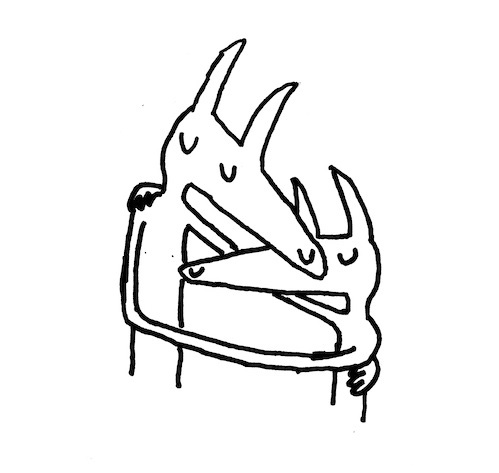

SIDE A/B
- My Boy
- Beach Life-In-Death
- Stop Smoking
- Sober to Death
- Nervous Young In...
SIDE C/D
- Bodys
- Cute Thing
- High to Death
- Famous Prophets
- Twin Fantasy
Twin Fantasy began as a solo album released by Car Seat Headrest's lead singer/songwriter Will Toledo on November 2, 2011. In an interview with CityBeat, Toledo explained that due to his lack of resources, Twin Fantasy was unable to achieve the expansiveness he originally wanted, adding that, "it just never seemed like the book was closed on it".
Twin Fantasy received critical acclaim from contemporary music critics.
Teens of Style is the 9th studio album by American indie rock band Car Seat Headrest, released on October 30, 2015. It was their first album recorded for Matador Records. Intended as an introductory compilation for new listeners, it features reworked, newly recorded versions of songs originally released between 2010 and 2012, with the addition of one new composition.